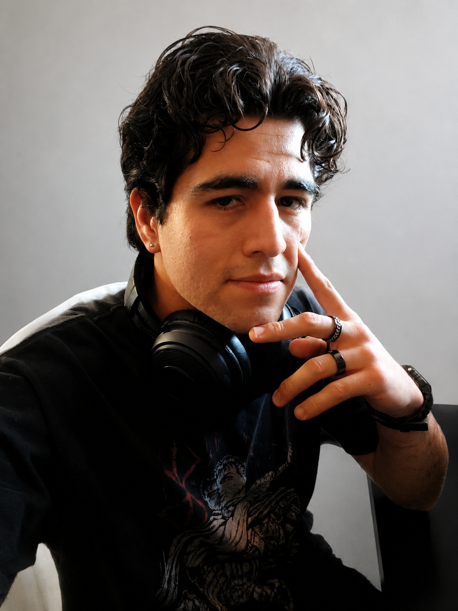

SOBRE MÍ
Hola, soy Esteban.
Soy estudiante de Realidad Virtual y Desarrollo de Videojuegos en la Universidad Bernardo O'Higgins. Me interesa el desarrollo de videojuegos como un proceso completo: desde la programación y las mecánicas hasta el diseño, la narrativa, la animación y la construcción de mundos.
Durante mi formación he participado en distintos proyectos 2D y 3D, trabajando con programación, modelado 3D básico, animación y desarrollo de prototipos para Game Jams. Estas experiencias me han permitido conocer distintas áreas del desarrollo y entender mejor cómo se conectan entre sí para construir una experiencia jugable.
Una de las cosas que más me atrae de los videojuegos es su capacidad para unir tecnología y creatividad. Disfruto aprendiendo cómo funcionan sus sistemas, pero también me interesa especialmente la narrativa, la creación de personajes y la forma en que una historia puede integrarse con las mecánicas y el mundo del juego.
Fuera del desarrollo de videojuegos, disfruto de la lectura, el boxeo y la música. Son intereses que también alimentan mi creatividad y mi forma de observar diferentes historias, personajes y experiencias.
Y tambien tengo a la novia mas linda y hermora del mundo. La amo <3
FORMACIÓN
Mi formación
Realidad Virtual y Desarrollo de Videojuegos
Actualmente me encuentro estudiando una carrera relacionada con el desarrollo de videojuegos y tecnologías de realidad virtual.
Durante mi formación he trabajado con programación, desarrollo 2D y 3D, diseño de videojuegos, modelado y creación de experiencias multijugador.
HERRAMIENTAS
Tecnologías que utilizo
Unity
Desarrollo de videojuegos 2D y 3D, creación de mecánicas, interfaces y sistemas de juego.
C#
Programación de sistemas, comportamiento de objetos, lógica de juego y diferentes mecánicas.
Photon
Implementación de sistemas multijugador online y sincronización de jugadores.
Blender
Modelado y trabajo básico con elementos 3D para videojuegos.
INTERESES
Lo que me interesa desarrollar
Programación de gameplay
Crear movimientos, controles, sistemas y mecánicas que definan cómo se juega una experiencia.
Videojuegos 2D y 3D
Experimentar con diferentes tipos de juegos, géneros y formas de interacción.
Multijugador
Aprender a desarrollar experiencias donde varios jugadores puedan interactuar dentro de una misma partida.